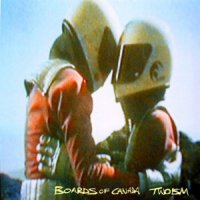

|  | |
| title | twoism |
| label | music 70 |
| catalog | board 1 |
| date | 1995 |
| copies | 100 |
| format | 12", mc |
| tracks | sixtyniner
(5:40)
oirectine (5:11) iced cooly (2:22) basefree (6:35) twoism (6:06) seeya later (4:33) melissa juice (1:32) smokes quantity (3:10) 1986 summer fire (1:36) |
| notes | "sixtyniner"
is a longer version than that on other recordings
"1986 summer fire" is uncredited on the sleeve notes |